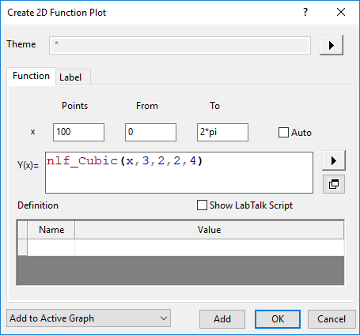
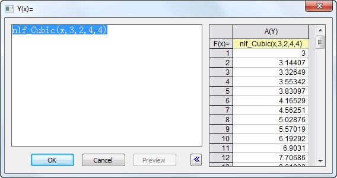

Registerkarte Funktion (2D-Funktionsdiagramm)
PD-Dialog-2DFunc-Tab

_Function_tab/Tip_icon.png) |
Um Daten für 2D-Funktionsdiagramme zu erstellen, klicken Sie mit der rechten Maustaste auf die Zeichnung und wählen Sie Datensatzkopie der Funktion erstellen. Oder klicken Sie, wenn Sie sich auf der Registerkarte Funktion im Dialog Details Zeichnung befinden, auf die Schaltfläche Arbeitsmappe unten im Dialog.
|
x
Punkte
Legen Sie die im Funktionsdiagramm anzuzeigende Anzahl von Datenpunkten fest.
Von und Bis
Legt den Anfang und das Ende des X-Bereichs fest.
Auto
Aktivieren Sie dieses Kontrollkästchen, damit Origin den X-Bereich automatisch bestimmt. Diese Option ist standardmäßig ausgewählt und ist nur verfügbar, wenn Zu aktivem Diagramm hinzufügen ausgewählt ist. Sie können das Kontrollkästchen deaktivieren, um den Anfang und das Ende des X-Bereichs in den Textfeldern Von bzw. Bis festzulegen.
Y(x)
Geben Sie die Kurvenformel hier ein.
Gängige mathematische und statistische Verteilungsfunktionen sind verfügbar, wenn Sie auf die dreieckige Schaltfläche rechts vom Textfeld Y(x) klicken. Weitere Einzelheiten zu diesen Funktionen finden Sie im Abschnitt Standardfunktionen von LabTalk. Zusätzlich können Sie eine Funktion mit Hilfe von allen durch Origin erkennbaren Operatoren (für die Multiplikation müssen Sie den Multiplikationsoperator (*) einschließen) direkt in das Textfeld eingeben. Sie können auch einen Bereich mit Namen in Ihrem Ausdruck verwenden.
Wenn Sie auf die Schaltfläche In separatem Fenster zeigen _Function_tab/Show_in_Separate_Window_Button.png) unter der dreieckigen Schaltfläche klicken, wird ein neuer Dialog Y(x)= mit einem breiteren Eingabefeld und ein Vorschaufeld geöffnet. Das Vorschaufeld zeigt eine Spalte, die aus dem von Ihnen definierten Y(x) berechnet wird. Sie können das Ergebnis prüfen und den Funktionskörper im Eingabefeld ggf. bearbeiten.
unter der dreieckigen Schaltfläche klicken, wird ein neuer Dialog Y(x)= mit einem breiteren Eingabefeld und ein Vorschaufeld geöffnet. Das Vorschaufeld zeigt eine Spalte, die aus dem von Ihnen definierten Y(x) berechnet wird. Sie können das Ergebnis prüfen und den Funktionskörper im Eingabefeld ggf. bearbeiten.
-
- 
Definition
Definieren Sie Namen und Werte der Variablen. Diese Variablen können bei der Formeldefinition verwendet werden. Wenn eine Variable noch nicht definiert ist, aber im Funktionskörper verwendet wird, ist sie rot markiert.
LabTalk-Skript zeigen
Aktivieren Sie dieses Kontrollkästchen, um Variablen mit Hilfe von LabTalk-Skripts zu definieren. Wenn Sie bereits einige Variablen in der Tabelle Definition definiert haben, aktivieren Sie dieses Kontrollkästchen, um die Äquivalente des LabTalk-Skripts zu diesen Funktionen zu zeigen.
Zusätzlich zu den Standardfunktionen und benutzerdefinierten Funktionen werden hier auch alle anderen LabTalk-Skripts unterstützt. Sie können also Bereichsvariablen, Zeichenkettenvariablen, Schleifen und X-Funktionen mit Zugriff auf LabTalk verwenden. Skripts, die hier eingegeben werden, werden vor Definition der Formel ausgeführt.
|
Es gibt eine schnelle Möglichkeit, ein bedingtes Kontroll- oder Schleifenskript zu laden, wenn Sie ein Skript in das Feld Skript vor Anwenden der Formel eingeben. Klicken Sie mit der rechten Maustaste auf das Feld Skript vor Anwenden der Formel, um Bedingt/Schleife unten im Kontextmenü auszuwählen. Wählen Sie dann eine gewünschte bedingte Struktur oder Schleife im Ausklappmenü. Die Syntax wird beim Cursor mit einfachen Kommentaren hinzugefügt.
|
Funktionsdiagramm ausgeben
Diese Auswahlliste links unten wird verwendet, um festzulegen, wie die Funktionsdiagrammkurve ausgegeben wird, Neues Diagramm erstellen, Zu aktivem Diagramm hinzufügen oder Zu aktivem Diagramm hinzufügen und neu skalieren.
| Hinweis: Dieses Kontrollkästchen ist nur verfügbar, wenn das Fenster eines 2D-Diagramms aktiv ist. Wenn das aktive Fenster kein 2D-Diagrammfenster ist, wird das 2D-Funktionsdiagramm in einem neuen Diagrammfenster erstellt. |
|
Seit Origin 2022 können Sie auf die Schaltfläche Hinzufügen klicken, um ein Funktionsdiagramm zu dem aktiven Diagrammfenster oder einem neuen Diagrammfenster ohne Schließen des Dialogs hinzuzufügen. Auf diese Weise können Sie gleichzeitig mehrere Funktionsdiagramme in ein Diagrammfenster einfügen.
|